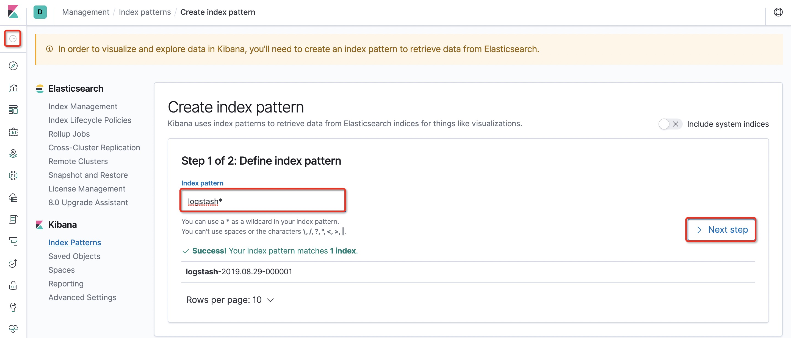
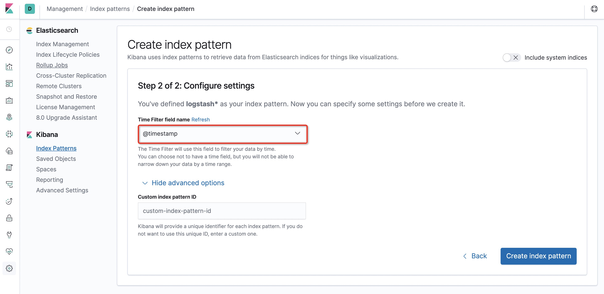
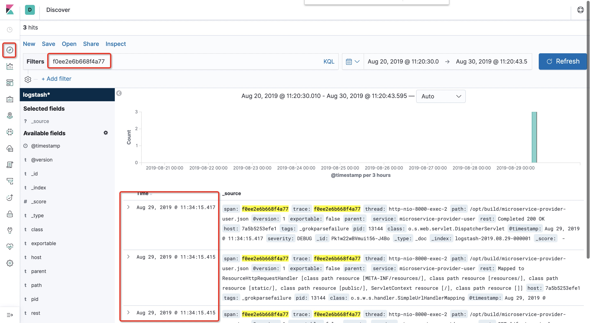

<!DOCTYPE HTML>
<html lang="zh-CN">
<head><meta name="generator" content="Hexo 3.8.0">
    <!--Setting-->
    <meta charset="UTF-8">
    <meta name="viewport" content="width=device-width, user-scalable=no, initial-scale=1.0, maximum-scale=1.0, minimum-scale=1.0">
    <meta http-equiv="X-UA-Compatible" content="IE=Edge,chrome=1">
    <meta http-equiv="Cache-Control" content="no-siteapp">
    <meta http-equiv="Cache-Control" content="no-transform">
    <meta http-equiv="pragma" content="no-cache">
    <meta http-equiv="Cache-Control" content="no-cache, must-revalidate">
    <meta http-equiv="expires" content="Mon Apr 06 2020 02:12:38 GMT+0800 (CST)">
    <meta name="renderer" content="webkit|ie-comp|ie-stand">
    <meta name="apple-mobile-web-app-capable" content="张万众的博客 - 关注Spring Cloud、Docker">
    <meta name="apple-mobile-web-app-status-bar-style" content="black">
    <meta name="format-detection" content="telephone=no,email=no,adress=no">
    <meta name="browsermode" content="application">
    <meta name="screen-orientation" content="portrait">
    <meta name="theme-version" content="1.2.3">
    <meta name="root" content="/">
    
    <!--SEO-->

    <meta name="keywords" content="Spring Cloud,Spring Cloud Sleuth,ELK">


    <meta name="description" content="
TIPS
本文基于Spring Cloud Greenwich SR2，理论兼容Spring Cloud所有版本。

应用整合
加依赖：
123456789&lt;dependency&gt;      &lt;groupId&gt;org.springframework.cloud&lt;...">


<meta name="robots" content="all">
<meta name="google" content="all">
<meta name="googlebot" content="all">
<meta name="verify" content="all">
    <!--Title-->


<title>Spring Cloud Sleuth使用ELK收集&amp;分析日志 | 张万众的博客 - 关注Spring Cloud、Docker</title>


    <link rel="alternate" href="../../atom.html" title="张万众的博客 - 关注Spring Cloud、Docker" type="application/atom+xml">


    

    


<link rel="stylesheet" href="../../static/css/bootstrap.min-271a649e0635d6fa1b.css">
<link rel="stylesheet" href="../../static/css/font-awesome.min-ac2bebcf7fb5b26.css">
<link rel="stylesheet" href="../../static/css/style-6f3c140f6eee20e6591da00ec0.css">


    


    <script>
        var _hmt = _hmt || [];
        (function() {
            var hm = document.createElement("script");
            hm.src = "https://hm.baidu.com/hm.js?13766878cde148282622871dd245a973";
            var s = document.getElementsByTagName("script")[0];
            s.parentNode.insertBefore(hm, s);
        })();
    </script>


    

</head>

</html>
<!--[if lte IE 8]>
<style>
    html{ font-size: 1em }
</style>
<![endif]-->
<!--[if lte IE 9]>
<div style="ie">你使用的浏览器版本过低，为了你更好的阅读体验，请更新浏览器的版本或者使用其他现代浏览器，比如Chrome、Firefox、Safari等。</div>
<![endif]-->

<body>
    
    <nav class="main-navigation">
    <div class="container">
        <div class="row clearfix">
            <div class="col-md-12 column">
                <nav class="navbar navbar-default" style="background-color:#fff;border:0;margin-bottom:0" role="navigation">
                    <div class="navbar-header">
                        <button type="button" class="navbar-toggle" data-toggle="collapse" data-target="#navbar-collapse-1">
                            <span class="sr-only">切</span>
                            <span class="icon-bar"></span>
                            <span class="icon-bar"></span>
                            <span class="icon-bar"></span>
                        </button>
                        <a class="logo" href="../../index.html">
                            张万众的博客
                        </a>
                    </div>

                    <div class="collapse navbar-collapse" style="border:0;" id="navbar-collapse-1">
                        <ul class="nav navbar-nav">
                            
                                
                                    <li>
                                        <a href="../../about.html" target="_blank">
                                            <i class="fa fa-user"></i>
                                            关于我
                                        </a>
                                    </li>
                                
                            
                                
                                    <li>
                                        <a href="../../archives.html" target="_blank">
                                            <i class="fa fa-archive"></i>
                                            归档
                                        </a>
                                    </li>
                                
                            
                                
                                    <li class="dropdown">
                                        <a href="#" class="dropdown-toggle" data-toggle="dropdown" data-hover="dropdown">
                                            <i class="fa fa-fire"></i>
                                            系列课程
                                            <strong class="caret"></strong>
                                        </a>
                                        <ul class="dropdown-menu">
                                            
                                                <li>
                                                    <a href="../../docker/00-docker-lession-index.html" target="_blank">
                                                        <i class="fa "></i>
                                                        Docker系列教程
                                                    </a>
                                                </li>
                                            
                                                <li>
                                                    <a href="../spring-cloud-index.html" target="_blank">
                                                        <i class="fa "></i>
                                                        Spring Cloud系列教程
                                                    </a>
                                                </li>
                                            
                                                <li>
                                                    <a href="../../spring-boot/spring-boot-index.html" target="_blank">
                                                        <i class="fa "></i>
                                                        Spring Boot系列教程
                                                    </a>
                                                </li>
                                            
                                        </ul>
                                    </li>
                                
                            
                                
                                    <li class="dropdown">
                                        <a href="#" class="dropdown-toggle" data-toggle="dropdown" data-hover="dropdown">
                                            <i class="fa fa-book"></i>
                                            开源书
                                            <strong class="caret"></strong>
                                        </a>
                                        <ul class="dropdown-menu">
                                            
                                                <li>
                                                    <a href="../../books/rocketmq.html" target="_blank">
                                                        <i class="fa fa-rocket"></i>
                                                        RocketMQ开发者指南
                                                    </a>
                                                </li>
                                            
                                                <li>
                                                    <a href="../../books/skywalking.html" target="_blank">
                                                        <i class="fa fa-skyatlas"></i>
                                                        Skywalking 6.2.0中文文档
                                                    </a>
                                                </li>
                                            
                                        </ul>
                                    </li>
                                
                            
                                
                                    <li class="dropdown">
                                        <a href="#" class="dropdown-toggle" data-toggle="dropdown" data-hover="dropdown">
                                            <i class="fa fa-cog"></i>
                                            工具
                                            <strong class="caret"></strong>
                                        </a>
                                        <ul class="dropdown-menu">
                                            
                                                <li>
                                                    <a href="../../tools/markdown2.html" target="_blank">
                                                        <i class="fa "></i>
                                                        微信排版工具2.0
                                                    </a>
                                                </li>
                                            
                                        </ul>
                                    </li>
                                
                            
                        </ul>
                        
                            <form id="search-form" class="navbar-form navbar-right">
                                <div class="form-group input-group">
                                    <input type="text" id="local-search-input" class="form-control" placeholder="搜我...">
                                    <span class="input-group-btn">
                                        <a class="btn btn-default">
                                            <i class="fa fa-search"></i>
                                        </a>
                                    </span>
                                </div>
                                <div id="local-search-result" class="local-search-result-cls"></div>
                            </form>
                        
                    </div>
                </nav>
            </div>
        </div>
    </div>
</nav>

    <a href="javascript:;" target="_blank">
        
    </a>


    <section class="content-wrap">
        <div class="container">
            <div class="row">
                <main class="col-md-8 main-content m-post">
                    

<p id="process"></p>
<article class="post">
    <div class="post-head">
        <h1 id="Spring Cloud Sleuth使用ELK收集&amp;分析日志">
            
                Spring Cloud Sleuth使用ELK收集&amp;分析日志
            
        </h1>
        <div class="post-meta">
    
        <span class="categories-meta fa-wrap">
            <i class="fa fa-folder-open-o"></i>
            <a class="category-link" href="javascript:;">Spring Cloud</a>
        </span>
    

    
        <span class="fa-wrap">
            <i class="fa fa-tags"></i>
            <span class="tags-meta">
                
                    <a class="tag-link" href="javascript:;">ELK</a> <a class="tag-link" href="javascript:;">Spring Cloud</a> <a class="tag-link" href="javascript:;">Spring Cloud Sleuth</a>
                
            </span>
        </span>
    

    
        
        <span class="fa-wrap">
            <i class="fa fa-clock-o"></i>
            <span class="date-meta">2019/09/01</span>
        </span>
        
            <span class="fa-wrap">
                <i class="fa fa-eye"></i>
                <span id="busuanzi_value_page_pv"></span>
            </span>
        
    
</div>
        
        
    </div>
    
    <div class="post-body post-content" id="post-content">
        
    <div class="toc-article">
        <strong>
            目录
        </strong>
        <div class="toc-content">
            <ol class="toc"><li class="toc-item toc-level-2"><a class="toc-link" href="#应用整合"><span class="toc-text">应用整合</span></a></li><li class="toc-item toc-level-2"><a class="toc-link" href="#测试"><span class="toc-text">测试</span></a></li><li class="toc-item toc-level-2"><a class="toc-link" href="#ELK搭建"><span class="toc-text">ELK搭建</span></a></li><li class="toc-item toc-level-2"><a class="toc-link" href="#测试Sleuth-amp-ELK"><span class="toc-text">测试Sleuth &amp; ELK</span></a></li><li class="toc-item toc-level-2"><a class="toc-link" href="#原理分析"><span class="toc-text">原理分析</span></a></li></ol>
        </div>
    </div>


        <blockquote>
<p><strong>TIPS</strong></p>
<p>本文基于Spring Cloud Greenwich SR2，理论兼容Spring Cloud所有版本。</p>
</blockquote>
<h2 id="应用整合"><a href="#应用整合" class="headerlink" title="应用整合"></a>应用整合</h2><ul>
<li><p>加依赖：</p>
<figure class="highlight xml"><table><tr><td class="gutter"><pre><span class="line">1</span><br><span class="line">2</span><br><span class="line">3</span><br><span class="line">4</span><br><span class="line">5</span><br><span class="line">6</span><br><span class="line">7</span><br><span class="line">8</span><br><span class="line">9</span><br></pre></td><td class="code"><pre><span class="line"><span class="tag">&lt;<span class="name">dependency</span>&gt;</span></span><br><span class="line">      <span class="tag">&lt;<span class="name">groupId</span>&gt;</span>org.springframework.cloud<span class="tag">&lt;/<span class="name">groupId</span>&gt;</span></span><br><span class="line">      <span class="tag">&lt;<span class="name">artifactId</span>&gt;</span>spring-cloud-starter-sleuth<span class="tag">&lt;/<span class="name">artifactId</span>&gt;</span></span><br><span class="line">    <span class="tag">&lt;/<span class="name">dependency</span>&gt;</span></span><br><span class="line">    <span class="tag">&lt;<span class="name">dependency</span>&gt;</span></span><br><span class="line">      <span class="tag">&lt;<span class="name">groupId</span>&gt;</span>net.logstash.logback<span class="tag">&lt;/<span class="name">groupId</span>&gt;</span></span><br><span class="line">      <span class="tag">&lt;<span class="name">artifactId</span>&gt;</span>logstash-logback-encoder<span class="tag">&lt;/<span class="name">artifactId</span>&gt;</span></span><br><span class="line">      <span class="tag">&lt;<span class="name">version</span>&gt;</span>6.1<span class="tag">&lt;/<span class="name">version</span>&gt;</span></span><br><span class="line">    <span class="tag">&lt;/<span class="name">dependency</span>&gt;</span></span><br></pre></td></tr></table></figure>
<p>注意， <code>logstash-logback-encoder</code> 的<strong>版本务必和Logback兼容</strong>，否则会导致应用启动不起来，而且不会打印任何日志！可前往 <code>https://github.com/logstash/logstash-logback-encoder</code> 查看和Logback的兼容性。</p>
</li>
<li><p>在 <code>resources</code> 目录下创建配置文件：<code>logback-spring.xml</code> ，内容如下：</p>
<figure class="highlight xml"><table><tr><td class="gutter"><pre><span class="line">1</span><br><span class="line">2</span><br><span class="line">3</span><br><span class="line">4</span><br><span class="line">5</span><br><span class="line">6</span><br><span class="line">7</span><br><span class="line">8</span><br><span class="line">9</span><br><span class="line">10</span><br><span class="line">11</span><br><span class="line">12</span><br><span class="line">13</span><br><span class="line">14</span><br><span class="line">15</span><br><span class="line">16</span><br><span class="line">17</span><br><span class="line">18</span><br><span class="line">19</span><br><span class="line">20</span><br><span class="line">21</span><br><span class="line">22</span><br><span class="line">23</span><br><span class="line">24</span><br><span class="line">25</span><br><span class="line">26</span><br><span class="line">27</span><br><span class="line">28</span><br><span class="line">29</span><br><span class="line">30</span><br><span class="line">31</span><br><span class="line">32</span><br><span class="line">33</span><br><span class="line">34</span><br><span class="line">35</span><br><span class="line">36</span><br><span class="line">37</span><br><span class="line">38</span><br><span class="line">39</span><br><span class="line">40</span><br><span class="line">41</span><br><span class="line">42</span><br><span class="line">43</span><br><span class="line">44</span><br><span class="line">45</span><br><span class="line">46</span><br><span class="line">47</span><br><span class="line">48</span><br><span class="line">49</span><br><span class="line">50</span><br><span class="line">51</span><br><span class="line">52</span><br><span class="line">53</span><br><span class="line">54</span><br><span class="line">55</span><br><span class="line">56</span><br><span class="line">57</span><br><span class="line">58</span><br><span class="line">59</span><br><span class="line">60</span><br><span class="line">61</span><br><span class="line">62</span><br><span class="line">63</span><br><span class="line">64</span><br><span class="line">65</span><br><span class="line">66</span><br><span class="line">67</span><br><span class="line">68</span><br><span class="line">69</span><br><span class="line">70</span><br><span class="line">71</span><br><span class="line">72</span><br><span class="line">73</span><br><span class="line">74</span><br><span class="line">75</span><br><span class="line">76</span><br></pre></td><td class="code"><pre><span class="line">&lt;?xml version="1.0" encoding="UTF-8"?&gt;</span><br><span class="line"><span class="tag">&lt;<span class="name">configuration</span>&gt;</span></span><br><span class="line">    <span class="tag">&lt;<span class="name">include</span> <span class="attr">resource</span>=<span class="string">"org/springframework/boot/logging/logback/defaults.xml"</span>/&gt;</span></span><br><span class="line">    </span><br><span class="line">    <span class="tag">&lt;<span class="name">springProperty</span> <span class="attr">scope</span>=<span class="string">"context"</span> <span class="attr">name</span>=<span class="string">"springAppName"</span> <span class="attr">source</span>=<span class="string">"spring.application.name"</span>/&gt;</span></span><br><span class="line">    <span class="comment">&lt;!-- Example for logging into the build folder of your project --&gt;</span></span><br><span class="line">    <span class="tag">&lt;<span class="name">property</span> <span class="attr">name</span>=<span class="string">"LOG_FILE"</span> <span class="attr">value</span>=<span class="string">"/Users/reno/Desktop/未命名文件夹/elk/logs/$&#123;springAppName&#125;"</span>/&gt;</span></span><br><span class="line"></span><br><span class="line">    <span class="comment">&lt;!-- You can override this to have a custom pattern --&gt;</span></span><br><span class="line">    <span class="tag">&lt;<span class="name">property</span> <span class="attr">name</span>=<span class="string">"CONSOLE_LOG_PATTERN"</span></span></span><br><span class="line"><span class="tag">              <span class="attr">value</span>=<span class="string">"%clr(%d&#123;yyyy-MM-dd HH:mm:ss.SSS&#125;)&#123;faint&#125; %clr($&#123;LOG_LEVEL_PATTERN:-%5p&#125;) %clr($&#123;PID:- &#125;)&#123;magenta&#125; %clr(---)&#123;faint&#125; %clr([%15.15t])&#123;faint&#125; %clr(%-40.40logger&#123;39&#125;)&#123;cyan&#125; %clr(:)&#123;faint&#125; %m%n$&#123;LOG_EXCEPTION_CONVERSION_WORD:-%wEx&#125;"</span>/&gt;</span></span><br><span class="line"></span><br><span class="line">    <span class="comment">&lt;!-- Appender to log to console --&gt;</span></span><br><span class="line">    <span class="tag">&lt;<span class="name">appender</span> <span class="attr">name</span>=<span class="string">"console"</span> <span class="attr">class</span>=<span class="string">"ch.qos.logback.core.ConsoleAppender"</span>&gt;</span></span><br><span class="line">        <span class="tag">&lt;<span class="name">filter</span> <span class="attr">class</span>=<span class="string">"ch.qos.logback.classic.filter.ThresholdFilter"</span>&gt;</span></span><br><span class="line">            <span class="comment">&lt;!-- Minimum logging level to be presented in the console logs--&gt;</span></span><br><span class="line">            <span class="tag">&lt;<span class="name">level</span>&gt;</span>DEBUG<span class="tag">&lt;/<span class="name">level</span>&gt;</span></span><br><span class="line">        <span class="tag">&lt;/<span class="name">filter</span>&gt;</span></span><br><span class="line">        <span class="tag">&lt;<span class="name">encoder</span>&gt;</span></span><br><span class="line">            <span class="tag">&lt;<span class="name">pattern</span>&gt;</span>$&#123;CONSOLE_LOG_PATTERN&#125;<span class="tag">&lt;/<span class="name">pattern</span>&gt;</span></span><br><span class="line">            <span class="tag">&lt;<span class="name">charset</span>&gt;</span>utf8<span class="tag">&lt;/<span class="name">charset</span>&gt;</span></span><br><span class="line">        <span class="tag">&lt;/<span class="name">encoder</span>&gt;</span></span><br><span class="line">    <span class="tag">&lt;/<span class="name">appender</span>&gt;</span></span><br><span class="line"></span><br><span class="line">    <span class="comment">&lt;!-- Appender to log to file --&gt;</span></span><br><span class="line">    <span class="tag">&lt;<span class="name">appender</span> <span class="attr">name</span>=<span class="string">"flatfile"</span> <span class="attr">class</span>=<span class="string">"ch.qos.logback.core.rolling.RollingFileAppender"</span>&gt;</span></span><br><span class="line">        <span class="tag">&lt;<span class="name">file</span>&gt;</span>$&#123;LOG_FILE&#125;<span class="tag">&lt;/<span class="name">file</span>&gt;</span></span><br><span class="line">        <span class="tag">&lt;<span class="name">rollingPolicy</span> <span class="attr">class</span>=<span class="string">"ch.qos.logback.core.rolling.TimeBasedRollingPolicy"</span>&gt;</span></span><br><span class="line">            <span class="tag">&lt;<span class="name">fileNamePattern</span>&gt;</span>$&#123;LOG_FILE&#125;.%d&#123;yyyy-MM-dd&#125;.gz<span class="tag">&lt;/<span class="name">fileNamePattern</span>&gt;</span></span><br><span class="line">            <span class="tag">&lt;<span class="name">maxHistory</span>&gt;</span>7<span class="tag">&lt;/<span class="name">maxHistory</span>&gt;</span></span><br><span class="line">        <span class="tag">&lt;/<span class="name">rollingPolicy</span>&gt;</span></span><br><span class="line">        <span class="tag">&lt;<span class="name">encoder</span>&gt;</span></span><br><span class="line">            <span class="tag">&lt;<span class="name">pattern</span>&gt;</span>$&#123;CONSOLE_LOG_PATTERN&#125;<span class="tag">&lt;/<span class="name">pattern</span>&gt;</span></span><br><span class="line">            <span class="tag">&lt;<span class="name">charset</span>&gt;</span>utf8<span class="tag">&lt;/<span class="name">charset</span>&gt;</span></span><br><span class="line">        <span class="tag">&lt;/<span class="name">encoder</span>&gt;</span></span><br><span class="line">    <span class="tag">&lt;/<span class="name">appender</span>&gt;</span></span><br><span class="line">    </span><br><span class="line">    <span class="comment">&lt;!-- Appender to log to file in a JSON format --&gt;</span></span><br><span class="line">    <span class="tag">&lt;<span class="name">appender</span> <span class="attr">name</span>=<span class="string">"logstash"</span> <span class="attr">class</span>=<span class="string">"ch.qos.logback.core.rolling.RollingFileAppender"</span>&gt;</span></span><br><span class="line">        <span class="tag">&lt;<span class="name">file</span>&gt;</span>$&#123;LOG_FILE&#125;.json<span class="tag">&lt;/<span class="name">file</span>&gt;</span></span><br><span class="line">        <span class="tag">&lt;<span class="name">rollingPolicy</span> <span class="attr">class</span>=<span class="string">"ch.qos.logback.core.rolling.TimeBasedRollingPolicy"</span>&gt;</span></span><br><span class="line">            <span class="tag">&lt;<span class="name">fileNamePattern</span>&gt;</span>$&#123;LOG_FILE&#125;.json.%d&#123;yyyy-MM-dd&#125;.gz<span class="tag">&lt;/<span class="name">fileNamePattern</span>&gt;</span></span><br><span class="line">            <span class="tag">&lt;<span class="name">maxHistory</span>&gt;</span>7<span class="tag">&lt;/<span class="name">maxHistory</span>&gt;</span></span><br><span class="line">        <span class="tag">&lt;/<span class="name">rollingPolicy</span>&gt;</span></span><br><span class="line">        <span class="tag">&lt;<span class="name">encoder</span> <span class="attr">class</span>=<span class="string">"net.logstash.logback.encoder.LoggingEventCompositeJsonEncoder"</span>&gt;</span></span><br><span class="line">            <span class="tag">&lt;<span class="name">providers</span>&gt;</span></span><br><span class="line">                <span class="tag">&lt;<span class="name">timestamp</span>&gt;</span></span><br><span class="line">                    <span class="tag">&lt;<span class="name">timeZone</span>&gt;</span>UTC<span class="tag">&lt;/<span class="name">timeZone</span>&gt;</span></span><br><span class="line">                <span class="tag">&lt;/<span class="name">timestamp</span>&gt;</span></span><br><span class="line">                <span class="tag">&lt;<span class="name">pattern</span>&gt;</span></span><br><span class="line">                    <span class="tag">&lt;<span class="name">pattern</span>&gt;</span></span><br><span class="line">                        &#123;</span><br><span class="line">                        "severity": "%level",</span><br><span class="line">                        "service": "$&#123;springAppName:-&#125;",</span><br><span class="line">                        "trace": "%X&#123;X-B3-TraceId:-&#125;",</span><br><span class="line">                        "span": "%X&#123;X-B3-SpanId:-&#125;",</span><br><span class="line">                        "parent": "%X&#123;X-B3-ParentSpanId:-&#125;",</span><br><span class="line">                        "exportable": "%X&#123;X-Span-Export:-&#125;",</span><br><span class="line">                        "pid": "$&#123;PID:-&#125;",</span><br><span class="line">                        "thread": "%thread",</span><br><span class="line">                        "class": "%logger&#123;40&#125;",</span><br><span class="line">                        "rest": "%message"</span><br><span class="line">                        &#125;</span><br><span class="line">                    <span class="tag">&lt;/<span class="name">pattern</span>&gt;</span></span><br><span class="line">                <span class="tag">&lt;/<span class="name">pattern</span>&gt;</span></span><br><span class="line">            <span class="tag">&lt;/<span class="name">providers</span>&gt;</span></span><br><span class="line">        <span class="tag">&lt;/<span class="name">encoder</span>&gt;</span></span><br><span class="line">    <span class="tag">&lt;/<span class="name">appender</span>&gt;</span></span><br><span class="line">    </span><br><span class="line">    <span class="tag">&lt;<span class="name">root</span> <span class="attr">level</span>=<span class="string">"INFO"</span>&gt;</span></span><br><span class="line">        <span class="tag">&lt;<span class="name">appender-ref</span> <span class="attr">ref</span>=<span class="string">"console"</span>/&gt;</span></span><br><span class="line">        <span class="comment">&lt;!-- uncomment this to have also JSON logs --&gt;</span></span><br><span class="line">        <span class="tag">&lt;<span class="name">appender-ref</span> <span class="attr">ref</span>=<span class="string">"logstash"</span>/&gt;</span></span><br><span class="line">        <span class="comment">&lt;!--&lt;appender-ref ref="flatfile"/&gt;--&gt;</span></span><br><span class="line">    <span class="tag">&lt;/<span class="name">root</span>&gt;</span></span><br><span class="line"><span class="tag">&lt;/<span class="name">configuration</span>&gt;</span></span><br></pre></td></tr></table></figure>
</li>
<li><p>新建 <code>bootstrap.yml</code> ，并将<code>application.yml</code> 中的以下属性移到<code>bootstrap.yml</code> 中。</p>
<figure class="highlight yaml"><table><tr><td class="gutter"><pre><span class="line">1</span><br><span class="line">2</span><br><span class="line">3</span><br></pre></td><td class="code"><pre><span class="line"><span class="attr">spring:</span></span><br><span class="line"><span class="attr">  application:</span></span><br><span class="line"><span class="attr">    name:</span> <span class="string">user-center</span></span><br></pre></td></tr></table></figure>
<p>由于上面的 <code>logback-spring.xml</code> 含有变量（例如 <code>springAppName</code> ），故而 <code>spring.application.name</code> 属性必须设置在 <code>bootstrap.yml</code> 文件中，否则，<code>logback-spring.xml</code> 将无法正确读取属性。</p>
</li>
</ul>
<h2 id="测试"><a href="#测试" class="headerlink" title="测试"></a>测试</h2><ul>
<li><p>启动应用</p>
</li>
<li><p>日志会打印到 <code>/Users/reno/Desktop/未命名文件夹/elk/logs/目录中</code> ，并且文件名称为 <code>user-center.json</code> ，内容类似如下：</p>
<figure class="highlight json"><table><tr><td class="gutter"><pre><span class="line">1</span><br><span class="line">2</span><br><span class="line">3</span><br><span class="line">4</span><br><span class="line">5</span><br></pre></td><td class="code"><pre><span class="line">&#123;<span class="attr">"@timestamp"</span>:<span class="string">"2019-08-29T02:38:42.468Z"</span>,<span class="attr">"severity"</span>:<span class="string">"DEBUG"</span>,<span class="attr">"service"</span>:<span class="string">"microservice-provider-user"</span>,<span class="attr">"trace"</span>:<span class="string">"5cf9479e966fb5ec"</span>,<span class="attr">"span"</span>:<span class="string">"5cf9479e966fb5ec"</span>,<span class="attr">"parent"</span>:<span class="string">""</span>,<span class="attr">"exportable"</span>:<span class="string">"false"</span>,<span class="attr">"pid"</span>:<span class="string">"13144"</span>,<span class="attr">"thread"</span>:<span class="string">"http-nio-8000-exec-1"</span>,<span class="attr">"class"</span>:<span class="string">"o.s.w.s.m.m.a.RequestResponseBodyMethodProcessor"</span>,<span class="attr">"rest"</span>:<span class="string">"Using 'application/json;q=0.8', given [text/html, application/xhtml+xml, image/webp, image/apng, application/signed-exchange;v=b3, application/xml;q=0.9, */*;q=0.8] and supported [application/json, application/*+json, application/json, application/*+json]"</span>&#125;</span><br><span class="line">&#123;<span class="attr">"@timestamp"</span>:<span class="string">"2019-08-29T02:38:42.469Z"</span>,<span class="attr">"severity"</span>:<span class="string">"DEBUG"</span>,<span class="attr">"service"</span>:<span class="string">"microservice-provider-user"</span>,<span class="attr">"trace"</span>:<span class="string">"5cf9479e966fb5ec"</span>,<span class="attr">"span"</span>:<span class="string">"5cf9479e966fb5ec"</span>,<span class="attr">"parent"</span>:<span class="string">""</span>,<span class="attr">"exportable"</span>:<span class="string">"false"</span>,<span class="attr">"pid"</span>:<span class="string">"13144"</span>,<span class="attr">"thread"</span>:<span class="string">"http-nio-8000-exec-1"</span>,<span class="attr">"class"</span>:<span class="string">"o.s.w.s.m.m.a.RequestResponseBodyMethodProcessor"</span>,<span class="attr">"rest"</span>:<span class="string">"Writing [Optional[User(id=1, username=account1, name=张三, age=20, balance=100.00)]]"</span>&#125;</span><br><span class="line">&#123;<span class="attr">"@timestamp"</span>:<span class="string">"2019-08-29T02:38:42.491Z"</span>,<span class="attr">"severity"</span>:<span class="string">"DEBUG"</span>,<span class="attr">"service"</span>:<span class="string">"microservice-provider-user"</span>,<span class="attr">"trace"</span>:<span class="string">"5cf9479e966fb5ec"</span>,<span class="attr">"span"</span>:<span class="string">"5cf9479e966fb5ec"</span>,<span class="attr">"parent"</span>:<span class="string">""</span>,<span class="attr">"exportable"</span>:<span class="string">"false"</span>,<span class="attr">"pid"</span>:<span class="string">"13144"</span>,<span class="attr">"thread"</span>:<span class="string">"http-nio-8000-exec-1"</span>,<span class="attr">"class"</span>:<span class="string">"o.s.o.j.s.OpenEntityManagerInViewInterceptor"</span>,<span class="attr">"rest"</span>:<span class="string">"Closing JPA EntityManager in OpenEntityManagerInViewInterceptor"</span>&#125;</span><br><span class="line">&#123;<span class="attr">"@timestamp"</span>:<span class="string">"2019-08-29T02:38:42.492Z"</span>,<span class="attr">"severity"</span>:<span class="string">"DEBUG"</span>,<span class="attr">"service"</span>:<span class="string">"microservice-provider-user"</span>,<span class="attr">"trace"</span>:<span class="string">"5cf9479e966fb5ec"</span>,<span class="attr">"span"</span>:<span class="string">"5cf9479e966fb5ec"</span>,<span class="attr">"parent"</span>:<span class="string">""</span>,<span class="attr">"exportable"</span>:<span class="string">"false"</span>,<span class="attr">"pid"</span>:<span class="string">"13144"</span>,<span class="attr">"thread"</span>:<span class="string">"http-nio-8000-exec-1"</span>,<span class="attr">"class"</span>:<span class="string">"o.s.web.servlet.DispatcherServlet"</span>,<span class="attr">"rest"</span>:<span class="string">"Completed 200 OK"</span>&#125;</span><br><span class="line">&#123;<span class="attr">"@timestamp"</span>:<span class="string">"2019-08-29T02:38:58.141Z"</span>,<span class="attr">"severity"</span>:<span class="string">"ERROR"</span>,<span class="attr">"service"</span>:<span class="string">"microservice-provider-user"</span>,<span class="attr">"trace"</span>:<span class="string">""</span>,<span class="attr">"span"</span>:<span class="string">""</span>,<span class="attr">"parent"</span>:<span class="string">""</span>,<span class="attr">"exportable"</span>:<span class="string">""</span>,<span class="attr">"pid"</span>:<span class="string">"13144"</span>,<span class="attr">"thread"</span>:<span class="string">"ThreadPoolTaskScheduler-1"</span>,<span class="attr">"class"</span>:<span class="string">"o.s.c.alibaba.nacos.discovery.NacosWatch"</span>,<span class="attr">"rest"</span>:<span class="string">"Error watching Nacos Service change"</span>&#125;</span><br></pre></td></tr></table></figure>
<p><strong>下面，只需要让Logstash收集到这个JSON文件，就可以在Kibana上检索日志啦！</strong></p>
</li>
</ul>
<h2 id="ELK搭建"><a href="#ELK搭建" class="headerlink" title="ELK搭建"></a>ELK搭建</h2><p>简单起见，本文使用Docker搭建ELK；其他搭建方式，请看官自行百度，比较简单，但很耗时。</p>
<ul>
<li><p>创建 <code>docker-compose.yml</code> 文件，内容如下：</p>
<figure class="highlight yaml"><table><tr><td class="gutter"><pre><span class="line">1</span><br><span class="line">2</span><br><span class="line">3</span><br><span class="line">4</span><br><span class="line">5</span><br><span class="line">6</span><br><span class="line">7</span><br><span class="line">8</span><br><span class="line">9</span><br><span class="line">10</span><br><span class="line">11</span><br><span class="line">12</span><br><span class="line">13</span><br><span class="line">14</span><br><span class="line">15</span><br><span class="line">16</span><br><span class="line">17</span><br><span class="line">18</span><br><span class="line">19</span><br><span class="line">20</span><br><span class="line">21</span><br><span class="line">22</span><br><span class="line">23</span><br><span class="line">24</span><br></pre></td><td class="code"><pre><span class="line"><span class="attr">version:</span> <span class="string">'3'</span></span><br><span class="line"><span class="attr">services:</span></span><br><span class="line"><span class="attr">  elasticsearch:</span></span><br><span class="line"><span class="attr">    image:</span> <span class="attr">elasticsearch:7.3.1</span></span><br><span class="line"><span class="attr">    environment:</span></span><br><span class="line">      <span class="string">discovery.type:</span> <span class="string">single-node</span></span><br><span class="line"><span class="attr">    ports:</span></span><br><span class="line"><span class="bullet">      -</span> <span class="string">"9200:9200"</span></span><br><span class="line"><span class="bullet">      -</span> <span class="string">"9300:9300"</span></span><br><span class="line"><span class="attr">  logstash:</span></span><br><span class="line"><span class="attr">    image:</span> <span class="attr">logstash:7.3.1</span></span><br><span class="line"><span class="attr">    command:</span> <span class="string">logstash</span> <span class="bullet">-f</span> <span class="string">/etc/logstash/conf.d/logstash.conf</span></span><br><span class="line"><span class="attr">    volumes:</span></span><br><span class="line">      <span class="comment"># 挂载logstash配置文件</span></span><br><span class="line"><span class="bullet">      -</span> <span class="string">./config:/etc/logstash/conf.d</span></span><br><span class="line"><span class="bullet">      -</span> <span class="string">/Users/reno/Desktop/未命名文件夹/elk/logs/:/opt/build/</span></span><br><span class="line"><span class="attr">    ports:</span></span><br><span class="line"><span class="bullet">      -</span> <span class="string">"5000:5000"</span></span><br><span class="line"><span class="attr">  kibana:</span></span><br><span class="line"><span class="attr">    image:</span> <span class="attr">kibana:7.3.1</span></span><br><span class="line"><span class="attr">    environment:</span></span><br><span class="line"><span class="bullet">      -</span> <span class="string">ELASTICSEARCH_URL=http://elasticsearch:9200</span></span><br><span class="line"><span class="attr">    ports:</span></span><br><span class="line"><span class="bullet">      -</span> <span class="string">"5601:5601"</span></span><br></pre></td></tr></table></figure>
<p>需要注意，上面的 <code>/Users/reno/Desktop/未命名文件夹/elk/logs/</code> 需要改成你应用的打印路径。</p>
</li>
<li><p>在docker-compose.yml文件所在目录创建 <code>config/logstash.conf</code> ，内容如下：</p>
<figure class="highlight"><table><tr><td class="gutter"><pre><span class="line">1</span><br><span class="line">2</span><br><span class="line">3</span><br><span class="line">4</span><br><span class="line">5</span><br><span class="line">6</span><br><span class="line">7</span><br><span class="line">8</span><br><span class="line">9</span><br><span class="line">10</span><br><span class="line">11</span><br><span class="line">12</span><br><span class="line">13</span><br><span class="line">14</span><br><span class="line">15</span><br><span class="line">16</span><br></pre></td><td class="code"><pre><span class="line">input &#123;</span><br><span class="line">  file &#123;</span><br><span class="line">    codec =&gt; json</span><br><span class="line">    path =&gt; "/opt/build/*.json"  # 改成你项目打印的json日志文件。</span><br><span class="line">  &#125;</span><br><span class="line">&#125;</span><br><span class="line">filter &#123;</span><br><span class="line">  grok &#123;</span><br><span class="line">    match =&gt; &#123; "message" =&gt; "%&#123;TIMESTAMP_ISO8601:timestamp&#125;\s+%&#123;LOGLEVEL:severity&#125;\s+\[%&#123;DATA:service&#125;,%&#123;DATA:trace&#125;,%&#123;DATA:span&#125;,%&#123;DATA:exportable&#125;\]\s+%&#123;DATA:pid&#125;\s+---\s+\[%&#123;DATA:thread&#125;\]\s+%&#123;DATA:class&#125;\s+:\s+%&#123;GREEDYDATA:rest&#125;" &#125;</span><br><span class="line">  &#125;</span><br><span class="line">&#125;</span><br><span class="line">output &#123;</span><br><span class="line">  elasticsearch &#123;</span><br><span class="line">    hosts =&gt; "elasticsearch:9200"  # 改成你的Elasticsearch地址</span><br><span class="line">  &#125;</span><br><span class="line">&#125;</span><br></pre></td></tr></table></figure>
</li>
<li><p>启动ELK</p>
<figure class="highlight shell"><table><tr><td class="gutter"><pre><span class="line">1</span><br></pre></td><td class="code"><pre><span class="line">docker-compose up</span><br></pre></td></tr></table></figure>
</li>
</ul>
<h2 id="测试Sleuth-amp-ELK"><a href="#测试Sleuth-amp-ELK" class="headerlink" title="测试Sleuth &amp; ELK"></a>测试Sleuth &amp; ELK</h2><ul>
<li><p>访问你微服务的API，让它生成一些日志（如果产生日志比较少，可将 <code>org.springframework</code> 包的日志级别设为 <code>debug</code> ）</p>
</li>
<li><p>访问 <code>http://localhost:5601</code> （Kibana地址），可看到类似如下的界面，按照如图配置Kibana。</p>
</li>
<li><p></p>
</li>
<li><p></p>
</li>
<li><p>输入条件，即可分析日志：</p>
<p></p>
</li>
</ul>
<h2 id="原理分析"><a href="#原理分析" class="headerlink" title="原理分析"></a>原理分析</h2><p>原理比较简单：</p>
<ul>
<li>让Sleuth打印JSON格式的日志；</li>
<li>然后在Logstash的配置文件中，配置grok语法，解析并收集JSON格式的日志，并存储到Elasticsearch中去；</li>
<li>Kibana可视化分析日志。</li>
</ul>

        <h2>相关文章</h2><ul><li><a href="../finchley-26/index.html">跟我学Spring Cloud（Finchley版）-26-使用Elasticsearch作为Zipkin Server的后端存储</a></li><li><a href="../finchley-25/index.html">跟我学Spring Cloud（Finchley版）-25-Spring Cloud Sleuth与Zipkin配合使用</a></li><li><a href="../finchley-24/index.html">跟我学Spring Cloud（Finchley版）-24-Spring Cloud Sleuth入门</a></li><li><a href="../../advertisment/my-spring-book/index.html">《Spring Cloud与Docker微服务实战》实体书目录</a></li><li><a href="../../advertisment/my-spring-book-code/index.html">《Spring Cloud与Docker微服务架构实战》配套代码</a></li></ul>
    </div>
    
    <div class="post-footer">
        <div class="col-sm-10">
            <div>
                <b>本文链接</b>：<a href="" target="_blank">Spring Cloud Sleuth使用ELK收集&分析日志</a>
            </div>
            <div>
                
                    转载声明：本博客由张万众创作，采用 <a href="javascript:;" target="_blank"> CC BY 3.0 CN </a> 许可协议。可自由转载、引用，但需署名作者且注明文章出处。如转载至微信公众号，请在文末添加作者公众号二维码。
                
            </div>
            <div>
                
            </div>
        </div>
        <div class="col-sm-2">
            
        </div>
    </div>
</article>

<div class="article-nav prev-next-wrap clearfix">
    
        <a target="_blank" href="../../spring-cloud-alibaba/update-spring-cloud-alibaba-to-2.1.0/index.html" class="pre-post btn btn-default" title="Spring Cloud Alibaba升级到2.1.0">
            <i class="fa fa-angle-left fa-fw"></i><span class="hidden-lg">上一篇</span>
            <span class="hidden-xs">Spring Cloud Alibaba升级到2.1.0</span>
        </a>
    
    
        <a target="_blank" href="../../other/sonar/index.html" class="next-post btn btn-default" title="手把手使用SonarQube分析、改善项目代码质量">
            <span class="hidden-lg">下一篇</span>
            <span class="hidden-xs">手把手使用SonarQube分析、改善项目代码质量</span><i class="fa fa-angle-right fa-fw"></i>
        </a>
    
</div>


    <div id="comments">
        
   <p>评论系统未开启，无法评论！</p>

    </div>


                </main>
                
    <aside class="col-md-4 sidebar">
        
        <div class="widget about-me">
    <div class="row">
        <div class="col-md-5">
            
        </div>
        <div class="col-md-7">
            <a class="series-a" href="javascript:void(0)">公众号</a>
            <ul>
                <li>• 技术干货推送</li>
                <li>• 免费资料领取</li>
                <li><b>• 扫码领取更多惊喜</b></li>
            </ul>
        </div>
    </div>
    
        <div class="row">
            <div class="col-md-5">
                
            </div>
            <div class="col-md-7">
                <a class="series-a" href="javascript:void(0)">小程序</a>
                <ul>
                    <li>• 原创笔记</li>
                    <li>• 独家心法</li>
                    <li><b>• 扫码领取</b></li>
                </ul>
            </div>
        </div>
    
</div>


        
        
    <div class="ad">
        <div class="row">
            <div class="col-md-12">
                <a href="javascript:;" rel="nofollow" target="_blank">
                    
                </a>
            </div>
        </div>
    </div>


        
        <div class="widget">
    <div class="row">
        <div class="col-md-3">
            
        </div>
        <div class="col-md-9">
            <a class="series-a" target="_blank" href="../spring-cloud-index.html">Spring Cloud系列教程</a>
            <p>全面、通俗易懂的Spring Cloud教程</p>
        </div>
    </div>
    <div class="row">
        <div class="col-md-3">
            
        </div>
        <div class="col-md-9">
            <a class="series-a" target="_blank" href="javascript:;">Spring Cloud Alibaba视频教程</a>
            <p>全网唯一，你值得拥有</p>
        </div>
    </div>
    <div class="row">
        <div class="col-md-3">
            
        </div>
        <div class="col-md-9">
            <a class="series-a" target="_blank" href="../../docker/00-docker-lession-index.html">Docker系列教程</a>
            <p>Docker系列</p>
        </div>
    </div>
    <div class="row">
        <div class="col-md-3">
            
        </div>
        <div class="col-md-9">
            <a class="series-a" target="_blank" href="../../spring-boot/spring-boot-index.html">Spring Boot系列教程</a>
            <p>Boot是基石...</p>
        </div>
    </div>
</div>


        
        
    <div class="widget">
        <h3 class="title">分类</h3>
        <ul class="category-list"><li class="category-list-item"><a class="category-list-link" href="javascript:;"><i class="fa" aria-hidden="true">Docker</i></a><span class="category-list-count">31</span></li><li class="category-list-item"><a class="category-list-link" href="javascript:;"><i class="fa" aria-hidden="true">Kubernetes</i></a><span class="category-list-count">2</span></li><li class="category-list-item"><a class="category-list-link" href="javascript:;"><i class="fa" aria-hidden="true">Spring Boot</i></a><span class="category-list-count">6</span></li><li class="category-list-item"><a class="category-list-link current" href="javascript:;"><i class="fa" aria-hidden="true">Spring Cloud</i></a><span class="category-list-count">94</span></li><li class="category-list-item"><a class="category-list-link" href="javascript:;"><i class="fa" aria-hidden="true">Spring Cloud Alibaba</i></a><span class="category-list-count">16</span></li><li class="category-list-item"><a class="category-list-link" href="javascript:;"><i class="fa" aria-hidden="true">Spring Cloud Stream</i></a><span class="category-list-count">1</span></li><li class="category-list-item"><a class="category-list-link" href="../../categories/其他/index.html"><i class="fa" aria-hidden="true">其他</i></a><span class="category-list-count">13</span></li><li class="category-list-item"><a class="category-list-link" href="../../categories/安装教程/index.html"><i class="fa" aria-hidden="true">安装教程</i></a><span class="category-list-count">7</span></li><li class="category-list-item"><a class="category-list-link" href="../../categories/工作/index.html"><i class="fa" aria-hidden="true">工作</i></a><span class="category-list-count">20</span></li></ul>
    </div>


        
        
        
        

        
    </aside>

            </div>
        </div>
    </section>
    <footer class="main-footer">
    <div class="container">
        <div class="row">
        </div>
    </div>
</footer>

<a id="back-to-top" class="icon-btn hide">
	<i class="fa fa-chevron-up"></i>
</a>


    <div class="copyright">
    <div class="container">
        <div class="row">
            <div class="col-sm-12">
                <div class="busuanzi">
    
        访问量:
        <strong id="busuanzi_value_site_pv">
            <i class="fa fa-spinner fa-spin"></i>
        </strong>
        &nbsp; | &nbsp;
        访客数:
        <strong id="busuanzi_value_site_uv">
            <i class="fa fa-spinner fa-spin"></i>
        </strong>
        &nbsp; <strong>Since 2018-12-26</strong>
    
</div>

            </div>
            <div class="col-sm-12">
                <span>Copyright &copy; 2017
                </span> |
                <span>
                    Powered by <a href="javascript:;" class="copyright-links" target="_blank" rel="nofollow">Hexo</a>
                </span> |
                <span>
                    Theme by <a href="javascript:;" class="copyright-links" target="_blank" rel="nofollow">ITMuch</a>
                </span>
            </div>
        </div>
    </div>
</div>

<script src="../../static/js/jquery.min.js"></script>
<script src="../../static/js/bootstrap.min.js"></script>
<script src="../../static/js/bootstrap-hover-dropdown.min.js"></script>

    <script src="../../static/js/search-3f4fbd0557c869ca0516ebb5f.js"></script>


    <script async="" src="../../static/js/busuanzi.pure.mini.js"></script>


<script src="../../static/js/app-da10bb3b2ae5c8348d2bd2cc3faf.js"></script>


</body>
